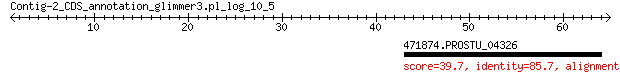

bitscore colors: <40, 40-50 , 50-80, 80-200, >200
 BLASTP 2.2.31+
Reference: Stephen F. Altschul, Thomas L. Madden, Alejandro A.
Schaffer, Jinghui Zhang, Zheng Zhang, Webb Miller, and David J.
Lipman (1997), "Gapped BLAST and PSI-BLAST: a new generation of
protein database search programs", Nucleic Acids Res. 25:3389-3402.
Reference for composition-based statistics: Alejandro A. Schaffer,
L. Aravind, Thomas L. Madden, Sergei Shavirin, John L. Spouge, Yuri
I. Wolf, Eugene V. Koonin, and Stephen F. Altschul (2001),
"Improving the accuracy of PSI-BLAST protein database searches with
composition-based statistics and other refinements", Nucleic Acids
Res. 29:2994-3005.
Database: eggnogv4.proteins.all.fa
14,875,530 sequences; 5,112,597,290 total letters
Query= Contig-2_CDS_annotation_glimmer3.pl_log_10_5
Length=64
Score E
Sequences producing significant alignments: (Bits) Value
471874.PROSTU_04326 39.7 0.003
> 471874.PROSTU_04326
Length=48
Score = 39.7 bits (91), Expect = 0.003, Method: Compositional matrix adjust.
Identities = 18/21 (86%), Positives = 19/21 (90%), Gaps = 0/21 (0%)
Query 43 KKDWLANLASSNRLCKKNMLF 63
KKDWLANLASS +LCKK MLF
Sbjct 5 KKDWLANLASSTQLCKKKMLF 25
Lambda K H a alpha
0.330 0.135 0.458 0.792 4.96
Gapped
Lambda K H a alpha sigma
0.267 0.0410 0.140 1.90 42.6 43.6
Effective search space used: 128158189880